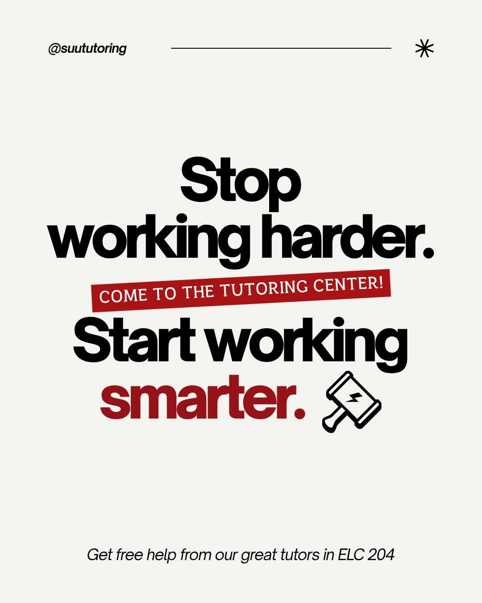
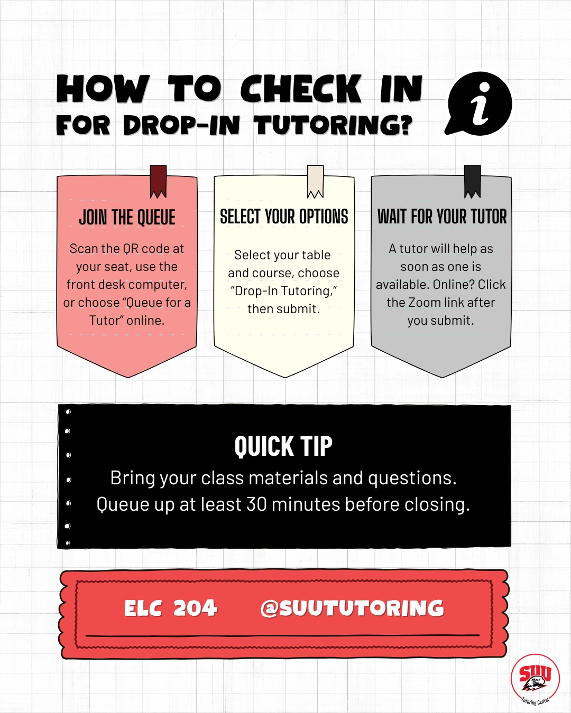

55K
Views
Account-level content views during the reporting period.
Southern Utah University
Tutoring Center
Social content, campus campaigns, and student research for SUU's academic support services.
I plan and produce Instagram and Facebook content for the Southern Utah University Tutoring Center. I take content from topic selection through design, copy, scheduling, and publishing, with center staff approving each piece before it goes live.
Alongside campus promotions, I collected and analyzed 300+ responses to a student portal survey and developed recommendations for student outreach.
Meta Insights · Sep-Oct 2026
55K
Account-level content views during the reporting period.
21K
Reported audience reach during the same period.
2.1K
Recorded interactions with account content.
~80%
Approximately four in five views came from outside the existing follower base.
Account-level Meta Insights totals for September-October 2026, rounded for this summary.
20.3K views, 9K reach, 772 interactions, 77.4% of views from non-followers, and 39 new follows. The original views total was Instagram 19,411 + Facebook 870 = 20,281. Meta Insights reported 77.3% interaction growth and 69.6% new-follow growth compared with the previous month. These figures belong to the earlier reporting window.
Service promotion and practical guidance for students, shown as original designs.


Published-post and Meta Insights screenshots will be added here.
Views, interactions, and service use measure different things. I use the content metrics to plan the next round without treating exposure as evidence of completed tutoring appointments.
With roughly 80% of views coming from non-followers, each post needs to explain what the service offers, who it helps, and what a student can do next.
The student portal survey adds another perspective on student needs. I use that distinction when developing outreach recommendations.